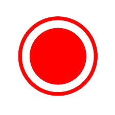
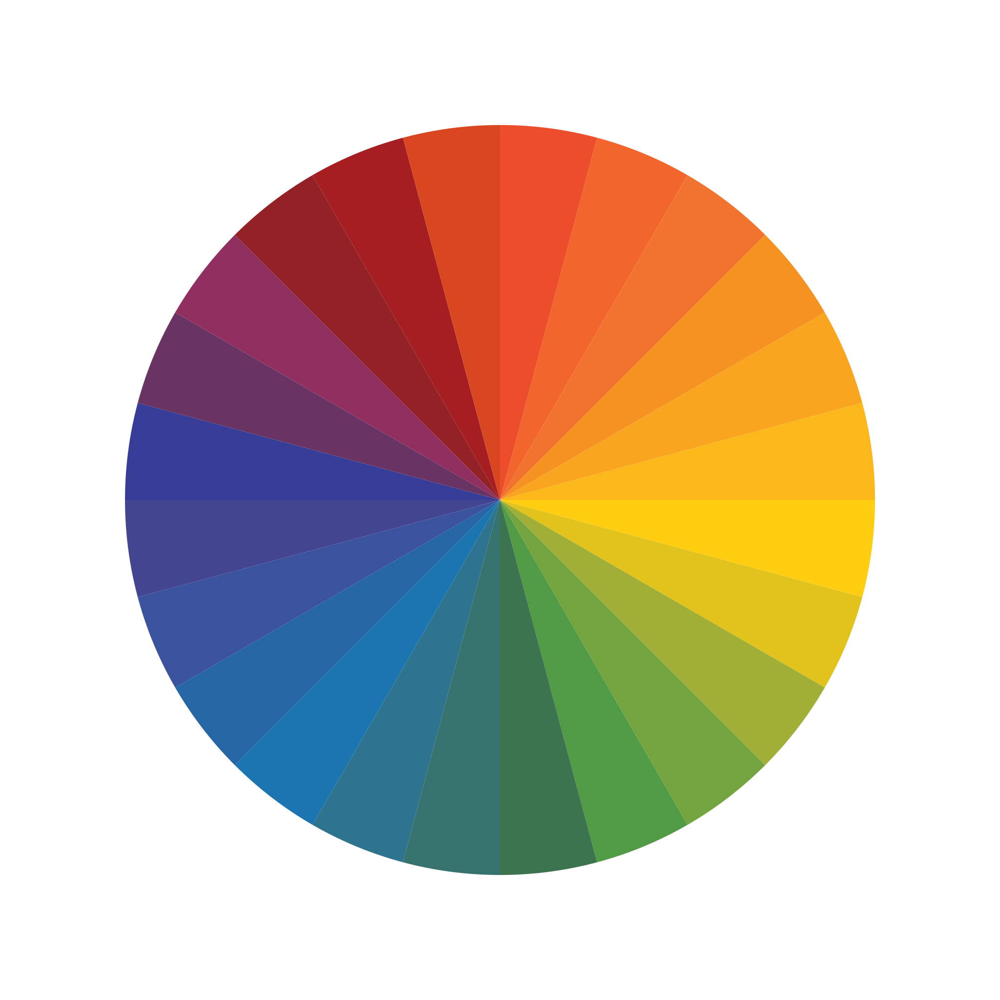

view mode

freehand
circle
rectangle
line
angled line
text
image
note
eraser
undo
redo
Upload another video
For multiple videos
undo
Annotations saved to DB
Annotations
/ 1:00
Standard
Frames
1x
0.25x
0.5x
0.75x
1x
1.25x
1.5x
1.75x
2x
2.35
1.85
16:9
4:3
1:1
Off